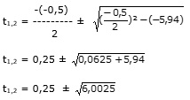

Aufgabe 160 Schiff A, das um 9.30 mit einer Geschwindigkeit von 13,2 km/h abfährt, begegnet um 11.18 Schiff B, das um 8.00 Uhr abgefahren ist. Schiff A kommt 30 Minuten früher an als Schiff B. Wie lang ist die Strecke? Die Strecke sei x km Schiff A ist bis zum Treffpunkt 11.18 Uhr - 9.30 Uhr = 1 h 48min = 1,8h unterwegs Schiff B ist bis zum Treffpunkt 11.18 Uhr - 8.00 Uhr = 3h18 min = 3,3h unterwegs Schiff A hat bis zum Treffpunkt s = 13,2 km/h * 1,8 h = 23,76 km zurückgelegt Schiff B braucht für die 23,76 km vom Treffpunkt bis zum Endpunkt 23,76 t Stunden --> v = ------- t 30 Minuten = 0,5 Stunden Schiff A braucht vom Treffpunkt bis zum Endpunkt (t - 0,5) h Die Gesamtstrecke ist x = 13,2 km/h * (t - 0,5) h + 23,76 km Schiff B hat vom Startpunkt bis zum Treffpunkt eine Geschwindigkeit von x - 23,76 v = ----------- 3,3 Für x eingesetzt und mit v gleich gesetzt: 23,76 13,2(t - 0,5) + 23,76 - 23,76 ------- = ------------------------------- t 3,3 23,76 13,2(t - 0,5) ------- = --------------- t 3,3 Über Kreuz multipliziert 3,3 * 23,76 = t * 13,2 *(t - 0,5) 78,408 = 13,2t2 - 6,6t | -78,408 13,2t2 - 6,6t - 78,408 | :13,2 t2 - 0,5t - 5,94 = 0 p, q - Formel p = -0,5 ; q = -5,94  t1,2 = 0,25 ± 2,45 t1 = 0,25 + 2,45 = 2,7 h Schiff B hat eine Geschwindigkeit von 23,76 v = ------- = 8,8 km/h 2,7 Eingesetzt: x - 23,76 8,8 = ----------- |*3,3 3,3 29,04 = x - 23,76 |+23,76 x = 52,8 km